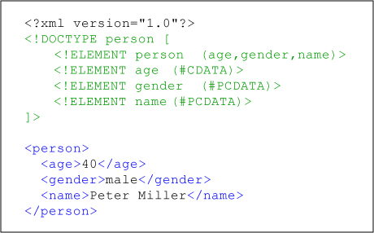

A document type definition DTD is a set of markup declarations that define a document type for a SGML-family markup language
DTD
A DTD defines the valid building blocks of an XML document. It defines the document structure with a list of validated elements and attributes. A DTD can be declared inline inside an XML document, or as an external reference.[1]
XML uses a subset of SGML DTD.
As of 2009, newer XML namespace-aware schema languages (such as W3C XML Schema and ISO RELAX NG) have largely superseded DTDs. A namespace-aware version of DTDs is being developed as Part 9 of ISO DSDL. DTDs persist in applications that need special publishing characters, such as the XML and HTML Character Entity References, which derive from larger sets defined as part of the ISO SGML standard effort.

Associating DTDs with documents
A
DTD is associated with an XML or SGML document by means of a document type declaration (DOCTYPE). The DOCTYPE appears in the syntactic fragment doctypedecl near the start of an XML document.[2] The declaration establishes that the document is an instance of the type defined by the referenced DTD.
DOCTYPEs make two sorts of declaration:
- an optional external subset
- an optional internal subset
The declarations in the internal subset form part of the DOCTYPE in the document itself. The declarations in the external subset are located in a separate text file. The external subset may be referenced via a public identifier and/or a system identifier. Programs for reading documents may not be required to read the external subset. Note that any valid SGML or XML document that references an external subset in its DTD, or whose body contains references to parsed external entities declared in its DTD (including those declared within its internal subset), may only be partially parsed but cannot be fully validated by validating SGML or XML parsers in their standalone mode (this means that these validating parsers don't attempt to retrieve these external entities, and their replacement text is not accessible).
However, such documents are still fully parsable in the non-standalone mode of validating parsers, which signals an error if it can't locate these external entities with their specified public identifier (FPI) or system identifier (a URI), or are inaccessible. (Notations declared in the DTD are also referencing external entities, but these unparsed entities are not needed for the validation of documents in the standalone mode of these parsers: the validation of all external entities referenced by notations is left to the application using the SGML or XML parser). Non-validating parsers may eventually attempt to locate these external entities in the non-standalone mode (by partially interpreting the DTD only to resolve their declared parsable entities), but do not validate the content model of these documents.
Examples
The following example of a DOCTYPE contains both public and system identifiers:
<!DOCTYPE html PUBLIC "-//W3C//DTD XHTML 1.0 Transitional//EN"
"http://www.w3.org/TR/xhtml1/DTD/xhtml1-transitional.dtd">
All HTML 4.01 documents conform to one of three SGML DTDs. The public identifiers of these DTDs are constant and are as follows:
- -//W3C//DTD HTML 4.01//EN
- -//W3C//DTD HTML 4.01 Transitional//EN
- -//W3C//DTD HTML 4.01 Frameset//EN
The system identifiers of these DTDs, if present in the DOCTYPE, are URI references. A system identifier usually points to a specific set of declarations in a resolvable location. SGML allows mapping public identifiers to system identifiers in catalogs that are optionally available to the URI resolvers used by document parsing software.
Note that this DOCTYPE can only appear after the optional XML declaration, and before the document body, if the document syntax conforms to XML. This includes XHTML documents: